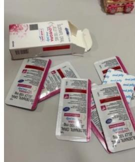

泰��果�鐾暾�介�B(2026最完整)
Neweacy smappack |  | |
1 Kam agra(男用) |�夥罩� �d· 加��自信感 以男性感����向的情趣果�� �m合在�s��或�H密�r刻使用 �O��概念偏向提升投入感、�� 化�x式感 在情�H互�又性黾幼孕排c��定 感 | 2 Lovegra(女用)提升情�w 投入 ·增添浪漫氛圉 �榕�性情趣�w���O�� �{整心情、��浪漫氛圉更容易�M 入状�B 可作�榍��蛐∥�,提升彼此互 �痈� �m合需要放��、增加�H密感的 �r刻 | 3 Super Kamagra Oral Jelly l 增添互�痈� ·延�L浪漫�r �Y合 前�蚧��� +�夥罩��d的 �p重�O�� ���H密�r刻更顺�场⒐�奏更自然 �m合想��浪漫�r光更持久、更 投入的情�H 旅�[、�o念日使用效果更佳 |
B【 泰��果�鐾暾�介�B】
�南��怏w��到情�H�x式感：使用方式、常��疑��、使用情境全面解析(2025最完整) 近�啄�,「泰��果�觥乖谌A人圈的����度��得�O高。
只要你加入泰��代��社�F、旅�[群�M、情�H社�F,就一定看�^大家�崃以���:
一、什麽是「泰��果�觥�?
泰��果�霾皇且话愕奶鹌罚�也不是零食。
它是一�N:
· 外型像果���l的小包装�b品
· 带有7�N水果香�獾奈兜�(不是甜味)
- 使用方式�p��、�y�Х奖愕那榫承∥�
由於香�馊岷汀�包装不具�毫Γ�加上「泰��限定」的���}性，��它在旅�[圈、情�H圈迅速爆 �t。
�S多人第一次看到�r,以�橹皇枪��鍪称�,但真正�J�R後才�l�F,它其��是一�N“�夥盏谰摺�, 用�硖嵘��扇讼嗵��r的�x式感,��情境��得更�_放、更多新�r感。
二、�槭谗崽���果����爆�t?
12 香�庖巳恕⑷肟诓淮瘫�(7�N水果香)
�c多�低���型商品不同,泰��果�霾皇翘鹞�,也不是苦味,而是带有淡淡的水果香�狻� 多�等诵稳菟�「比�^像��料的香味」。
接受度高，是它爆�t的第一大理由。
22 使用方式「超���巍�→�l都敢��
旅客使用後回��分享使用心得,��它��成年�p族群最敢入�T的小物之一。
32 男女都可以使用 → 市�龈�大
没有性别限制,情侣可以一起使用,是它传播快的原因。
4. 包装小巧、不尴尬 →最�m合送�Y或�u造�@喜
不像一般情境用品����人害羞，泰阈果�隹雌��砗茌p��、不����。
5B 泰��文化+旅�[�� → 形成爆�t流量池
泰��本�砭陀写罅柯每土���,因此所有能带回��的「���}小物」都容易被放大。
三、泰��果�龅氖褂梅绞�
泰阈果�龅氖褂梅绞椒浅���性，不��新手或有����的人都能�p��上手。
√ 1. �_封方式：��摺�D�� 不是撕�_,而是：
�⒐��龃���摺,用手指往中�g一��,内容物就���娜笨��D出�� 使用起�砬��Q、不易沾手。
√ 2. 使用方式一：直接吃
入口後是淡淡水果香，不��甜、不刺喉，味道柔和。
√ 3.使用方式二：加入��料��拌 �S多泰��人自己���@��用：
· 加�M茶、�馀菟�、果汁
- ��拌均�蜥犸�用
· 香����更自然、更容易入口
�@�N方式�Α覆幌��g�纬怨��隹诟小沟娜擞绕溆押谩�
√ 4. 男女使用方式相同
�]有性�e差��,情�H常��一起使用,提高互�优c同步感。
四、使用情境：最常��的6大�龊�
12 情�H旅行�r的小�@喜
�S多人第一次接�|泰阈果��,就是在泰��旅行。
�扇艘黄鹩茫���晚上的�夥崭�好、�x式感更��。
2E 想要新鲜感、想打破�T性 很多使用者�h：
「因�樗�没有�毫Γ�所以比�I一般情趣商品更自然。」
3. 想要创造共同的回��
因�槲兜捞厥狻⒂邢���,��整���w��比�^像「分享的一��秘密」。
42 群�M朋友一起�I�懋�趣味�Y物
生日聚会、交换�Y物、朋友�鹤���,非常常��。
50��成�x式感道具
有些人固定每��月情�H日都拿一包出�懋�成�x式。
60 ��探�Ψ胶闷嫘牡男》椒�
「你敢不敢���@��?」 就是�夥盏拈_始。
五、泰��果�鲞m合哪些人?
· 情�H、夫妻
· 喜�g新鲜事物
· 喜�g�x式感
· 想��晚上更有�夥�
· 喜�g泰��文化
· 想�L��香�夤��霎b品
· 想找�p��不尴尬的小物
六、泰��果�� FAQ
Q1: 泰��果�龀云��硎颤N味道?
不是甜味，也不是苦味，而是7�N水果香��,味道很温和、不刺激。 Q2: 男女都能使用��?
可以,�@是泰��果�鲎钐��e的地方。
Q3: 女生有���侔姹���?
有!
品牌推出玫瑰味版本,香�飧����@,许多女生更喜�g。
Q4: 怎麽使用��比�^顺口?
不喜�g直接吃的人可以：
加入茶、汽水或�馀菟���拌��用 Q5: 吃多一包��比�^有感��?
不��,一次一包即可。
Q6: 多久前使用比�^��好?
不少人分享��提前30-60 分��,但其��因人而��。
Q7: 空腹比�^快��?
部分人�X得空腹比�^明�@,但�@不是硬性���t。
Q8: 保存方式?
避免潮湿、高温,夏天不要放车上。
Q9: 可以每天吃��?
不建�h。
�@不是保健食品，是「情境用品」。
Q10: 去哪禅�I最安全?
因�樘���果�銎放贫唷�版本多，
建�h找信任的店家或固定代�����I, 避免�I到低�r仿版或�碓床幻鞯漠b品。
七、使用注意事��
· 不�m合未成年
· 孕�D舆哺乳期不建�h
· 一次一包
· 不和不明�b品混合
· 若身�w不�m就停止
· 重要的是：�碓纯煽�
八、泰��果�稣嬲�的魅力：不是��烈，而是「�夥铡�
�拇罅渴褂谜叻窒��砜矗�
泰��果�鍪��g迎的原因�K不是什麽��效功能，而是：
· 香�馊岷�
· 使用方式��性
· 情�H一起使用的互�痈�
· ��夜晚��得更�p��
· 心情放��、�x式感增加
· 有趣、不尴尬
· �@是泰��限定的小秘密
它更像是一�N「把彼此拉近一�c」的方式。
�Y�Z:
泰��果�霾皇枪δ芷罚�而是一�N�p��、�o�毫Α⒕哂��x式感的香�庑∥铩�
它的魅力在於:
· 入口自然(水果香)
· 情�H可一起使用
· 旅行回��的延伸
· �u造�@喜、 提升�夥�
· 男女都能接受的包装�c口感
如果你正在找一�幽堋冈黾踊��印��p少�擂巍⑻嵘��x式感」的情�H小物, 泰��果����是非常值得�L��的�x�瘛�